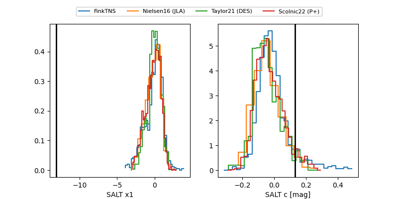

FINK: ZTF25abqnjol
Lasair: ZTF25abqnjol
ALeRCE: ZTF25abqnjol
TNS: 2025xrm
YSE: 2025xrm
ZTF25abqnjol (ztf,fink)
2025xrm (tns,yse)
equatorial (ra, dec) = (9.2575,+16.60408)
galactic (l, b) = (117.9483,-46.12820)

last atlaso=19.39, ztfg=19.78, ztfr=19.76
1 atlaso, 3 ztfg, 3 ztfr detections